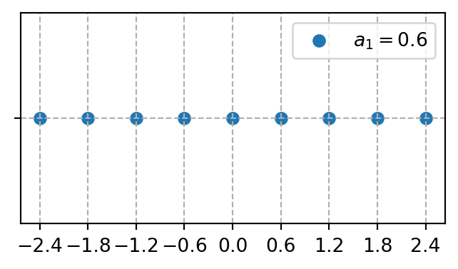

Mostrar código
# En el ambiente cargamos las opciones más comúnes de numpy, scipy y matplotlib
from pylab import *
# Definimos la magnitud del vector a1
a1 = 0.6
# Definimos el vector vec_a1
vec_a1 = array([a1])
# Tomamos un subconjunto del conjunto de enteros [-4,-3,-2,-1,0,1,2,3,4]
n1 = arange( -4, 5 )
# Obtenemos los puntos de la red
red = dot( n1.reshape(len(n1),1),vec_a1 )
# Graficamos
# Definimos una figura -> fig y sus ejes -> ax
fig,ax = plt.subplots(figsize=((4,2)))
# Graficamos con puntos los puntos de la red en un sistema de coordenadas cartesiano.
# En el eje x colocamos los puntos de la red y en el eje y asignamos cero.
# ax.scatter( [coordenadas: x] , [coordenadas: y], label="Etiqueta que identifica los datos")
ax.scatter(red, zeros_like(red), label=f"$a_1={a1}$")
# Escribimos ax.scatter ya que se grafican los puntos (scatter) en los ejes (ax).
# Colocamos el cuadro de leyenda
ax.legend()
# Colocamos las marcas en el eje x acorde a los puntos de la red
ax.set_xticks(red)
# Colocamos unas líneas punteadas como guía
ax.grid(ls='--')
# Colocamos las marcas en el eje y
ax.set_yticks([0])
# Colocamos el texto en las marcas del eje y
ax.set_yticklabels([""])
# Mostramos la gráfica
plt.show()
